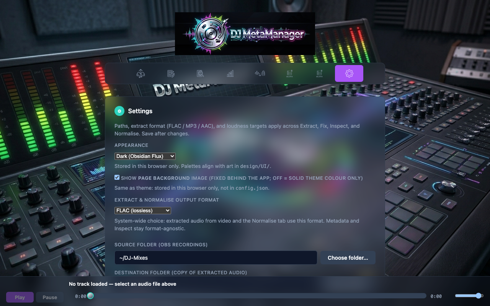

Install & first run
DJ MetaManager is a Flask application that serves a browser UI on your computer. It expects macOS for Finder integration (moving recordings to Bin). ffmpeg and ffprobe are required for almost every audio operation.
Requirements
- macOS (for “move recording to Bin” on Extract).
- Python 3.10+.
- ffmpeg and ffprobe on your
PATH(e.g.brew install ffmpeg). - Optional: flac CLI for smaller FLAC output on Normalise (
brew install flac).
Clone and virtual environment
git clone https://github.com/apj72/dj-meta-manager.git
cd dj-meta-manager
python3 -m venv venv
source venv/bin/activate
pip install -r requirements.txt
cp config.json.example config.jsonEdit config.json or use the Settings tab after first launch.
Starting the server
Foreground (development and troubleshooting):
source venv/bin/activate
python app.pyBackground (project helpers):
./start.sh # logs to server.log
./stop.shDefault URL: http://127.0.0.1:5123 (or localhost).

22-terminal-start-script.png).Initial configuration
Open Settings and set at least source and destination folders. Choose extract format (FLAC, MP3, or AAC/M4A)—this format is also used when you Normalise a file. Set LUFS and true peak targets to match your mastering chain (e.g. streaming reference vs. louder club material).

02-settings-full-page.png).Third-party services
Search and metadata use public APIs and pages (Apple Music search API, Discogs API with an identifying User-Agent, Bandcamp HTML). Rate limits or site changes can affect results; see current Discogs and Apple developer terms if you rely on this tool commercially.
config.json or tokens to a public repository. Treat the processing log as local operational data, not a public artefact.
Next steps
Continue to Extract for the main capture-to-library workflow, or Fix Metadata if you already have files to tag.